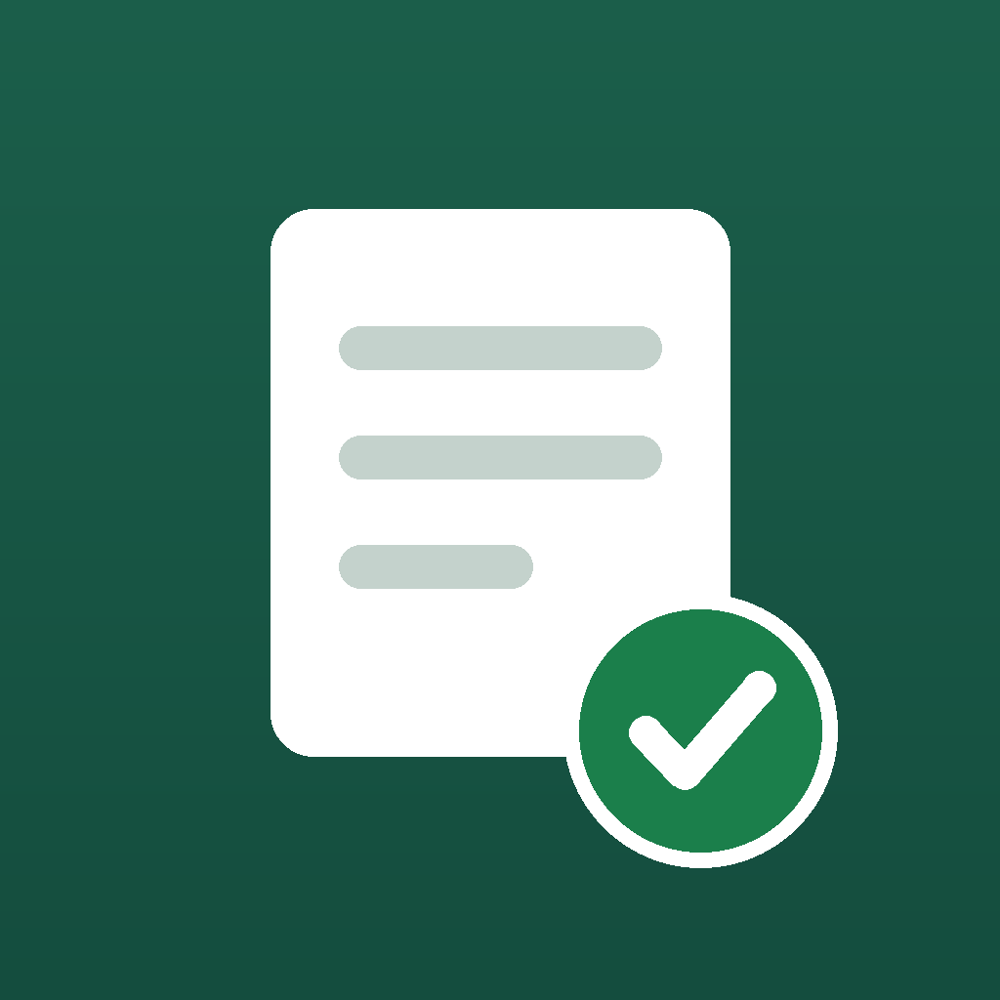

答えではなく、根拠で覚える。技術士第一次試験の学習アプリ
技術士第一次試験（建設部門）を受ける方のための学習アプリです。問題を1問ずつ解き、間違えた問題だけが、根拠つきの解説とともに手元に溜まっていきます。
他の問題集アプリと違うのは、解説に必ず根拠を示すことです。「なぜその答えなのか」を、法令の条文・公式・公的なガイドラインまで遡って示します。だから、解説そのものを利用者ご自身で確かめられます。
ログイン不要。広告なし。インターネットに接続していなくても、すべての機能が使えます。
お使いの端末の中だけに保存されます。外部のサーバーには送信されません。アプリ内の「学習記録をリセット」から、いつでもすべて削除できます。
現在は引き継がれません。学習記録は端末内にのみ保存されるため、アプリを削除したり機種を変えたりすると失われます。データの書き出しと読み込みは、今後の課題として検討しています。
収録作業が済んでいない科目です。準備ができしだい、アプリの更新でお使いいただけるようになります。
お手数ですが、下記の連絡先までお知らせください。問題番号と、どこが誤っていると思われるかを添えていただけると助かります。根拠を示す方針をとっているため、ご指摘は根拠にあたって確認のうえ、修正いたします。
アプリ内の「収録内容について」に、そのつど明記しています。現在は、出題範囲にもとづいて作成した練習問題を収録しています。
不具合のご報告、解説の誤りのご指摘、ご要望などは、こちらまでお願いいたします。数日以内に返信いたします。